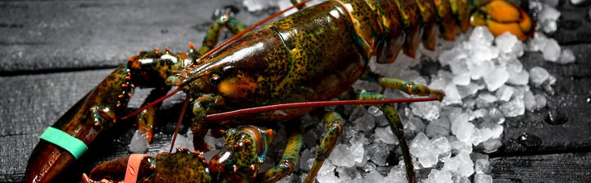

¿Qué es un bugre?
El bugre es como se llama al bogavante en Asturias.

La hembra es más apreciada que el macho, y el tiempo de cocción es el responsable de la calidad final. Desde el punto de vista gastronómico, el bogavante es toda una joya marina: la cabeza esconde su parte más preciada y el salpicón es su mejor condimento.
Es el bogavante o Homarus gammarus, crustáceo al que también se conoce como lubrigante (denominación frecuente en Galicia) o bugre (en Asturias, donde también se habla del bogavuelo, un bogavante de tamaño casi XXL). Frente a la famosa langosta, pariente muy cercano, tiene menor tamaño y, para muchos, más sabor.
Habita fondos de roca y arena a entre dos y cincuenta metros de profundidad y se alimenta de calamares, sepias y pulpos, pequeños moluscos y peces. Tiene fama de animal nocturno, agresivo y solitario, con un peso que varía de los 300 gramos a los cuatro o cinco kilos.
Desde el punto de vista gastronómico es toda una joya marina, por su sabor a mar y el contraste de texturas de sus distintas partes. En su cabeza esconde la parte más preciada: el coral y una sabrosa carne rojiza, más crujiente en el cuerpo y más cremosa en otras zonas. La mezcla de sus partes, a veces con algún otro marisco, da lugar al salpicón, todo un éxito de la cocina de marisco, una receta en frío que nació para aprovechar las sobras. Suele aderezarse con vinagreta y, muchas veces, cebolla o huevo duro.
¿Es saludable?
Además de su sabor y sus posibilidades en la cocina, el bogavante es muy interesante desde el punto de vista nutricional. Es rico en vitamina A, que favorece la vista, y en casi todas las del grupo B, clave para el metabolismo de las proteínas: sobre todo la B3 y la B12, que contribuye a la formación de glóbulos rojos y al mantenimiento del sistema nervioso. También aporta potasio, magnesio y fósforo, que favorecen el tono muscular, el sistema inmunitario y los huesos. Y tiene muy poca grasa y unas 86 calorías.
Su único inconveniente es su alto contenido en sodio, a tener en cuenta por quienes tienen la tensión alta.